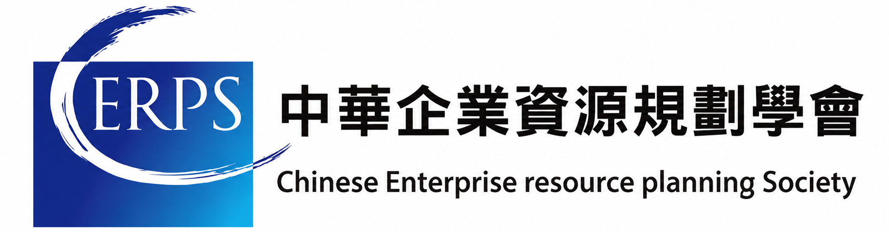
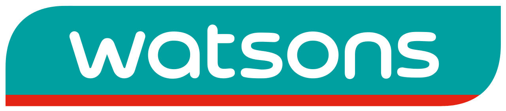
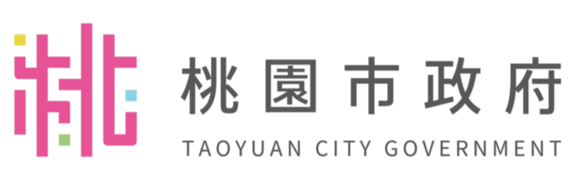

Present
National Taiwan University of Science and Technology
Master of Science in Information Management
SELECTED WORKS
Chen-An, Chuang
Click anywhere to explore
Professional Summary
I am an Information Management graduate student at NTUST with experience in SAP ERP, digital transformation, LLM applications, computer vision, and AI security. My recent work combines RAG and MCP to build domain-specific AI systems with data security and governance in mind.
Core Skills
Education
Experience

Contributed to SAP integration modernization, AI tool development, automated interface validation, and enterprise process optimization.
Contributed to enterprise digital transformation work with a focus on practical technology adoption and process improvement.

Taught programming concepts through structured exercises and creative projects for elementary-school students.

Worked on SAP-related consulting tasks, ERP module learning, and implementation support across enterprise scenarios.

Supported IT operations and learned how enterprise technology teams maintain services in a retail headquarters environment.

Assisted public-sector information work and gained exposure to system operations in government service workflows.
Delivered SAP Financial Accounting and ABAP programming training after completing multi-module SAP preparation.
Selected Projects
Our team analyzed 1,175 patent families and mapped five tactile sensing technologies across robotic grasping, safety, and care applications.
For a challenge proposed by MIRDC, we recommended prioritizing optical tactile sensing for care robots that grasp objects gently.
JUST RESULT · First place, 2026 Industrial Patent Analysis and Strategy Competition
Upgraded the Spring Boot backend and integrated MCP with Spring AI to provide four SAP query tools. Automated ABAP tests compared standard and custom interfaces field by field, validating seven interface pairs.
Implemented a Business Partner change-tracking enhancement using SAP’s standard change records and created a shared playbook that improved AI tool development efficiency by about 70%.
Built an on-premises legal Q&A system for land administration agents. It retrieves Taiwanese land regulations through MCP and cites the articles behind each answer.
My first-author paper received the Best Paper Award at CIIE 2026.
An Agentic Legal Question-Answering System with Citation Verification and Structural Guardrails: A Case Study of Urban Renewal Regulations
Nov 2026–Oct 2027 · Approved
Wrote the core research methods for an on-premises legal advisory platform for urban renewal and land regulations. Planned the Agentic AI, GraphRAG, and MCP architecture, with mandatory retrieval before inference.
Designed three comparative evaluations covering retrieval performance, legal reasoning, and industry deployment, with quantitative metrics and pre- and post-tests involving experts and practitioners. As project manager, coordinated industry partnership agreements, budgets, and contract documents.
Led the team that integrated YOLOv5, OpenPose, and PID flight control to identify rescue targets and plan transport routes.
Earned second place in the department’s graduation project competition, an honorable mention in Taoyuan’s student entrepreneurship competition, and a project grant in Hualien’s youth and local industry competition.
Developed a fruit quality classification API using the Lemonade SDK and an AI agent. Integrated the API into an n8n automation workflow and designed the system for fully local deployment with Docker containers.
First place in the AMD Lemonade SDK and AI Agent Project Competition.
Managed the project and configured enterprise structure, user permissions, and financial settings in IMG.
Used ABAP and Python automation to calculate product carbon footprints with custom emissions factors. The team placed second in the final competition.
Represented NDHU’s ERP Student Team in an academic exchange with Inha University in Korea.
Discussed data analysis for business decisions and system improvements, then presented the findings in a project report.
Coordinated scheduling, staffing, and presentations for NDHU’s 2024 Graduation Projects and USR — Hualien Common Good Project Showcase.
Built a LINE bot for automated replies and a Unity driving simulator to help learners prepare for their driving test at the NDHU driving school.
Also built a database prototype for concert ticketing.
Achievements
For research on an agentic legal question-answering system with citation verification and structural guardrails.
First place, JUST RESULT — robotic perception fusion technology.
First place for the fruit quality classification API and its n8n integration.
CERPS certification in SAP S/4HANA enterprise resource planning.
Honorable mention for the Aerial Vision project.
Aerial Vision placed in the top ten and received a grant to carry out the project.
Leadership